Каменные небеса
✦ ✠ ✦Готика — не стиль мрака. Это стиль света: её создатели пытались превратить камень в подобие небесного Иерусалима через витражи и стрельчатые арки. Термин придумали гуманисты Возрождения как оскорбление — «варварское, готское» искусство. Они ошиблись: то, что они презирали, стало величайшим достижением средневековой инженерии.
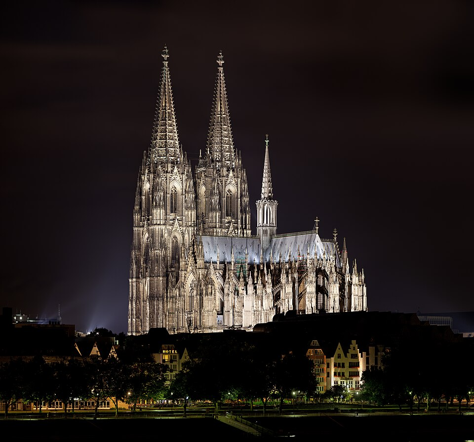
Кёльнский собор
Строительство длилось 632 года — с 1248 по 1880. Башни высотой 157 м сделали его самым высоким зданием мира на 4 года. Внутри — рака Трёх волхвов, одна из крупнейших реликвий Европы.
1248 — 1880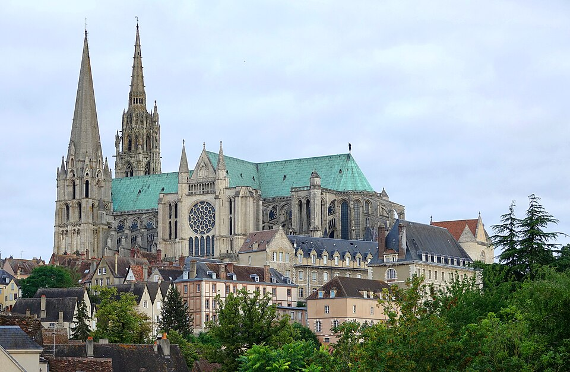
Шартрский собор
176 витражей XII–XIII веков — крупнейшая уцелевшая коллекция средневекового стекла в мире. Секрет «синего Шартра» — добавление кобальта и натрия в расплав. Уцелел во время обеих мировых войн.
1194 — 1220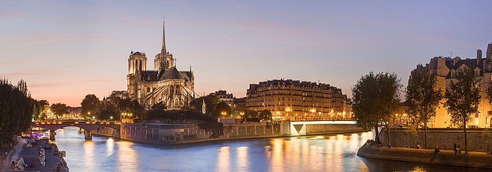
Нотр-Дам де Пари
Первый собор с полноценными аркбутанами — внешними опорами, снимающими нагрузку со стен. Пожар 15 апреля 2019 уничтожил шпиль XIX века и крышу. Реконструкция завершена в декабре 2024.
1163 — 1345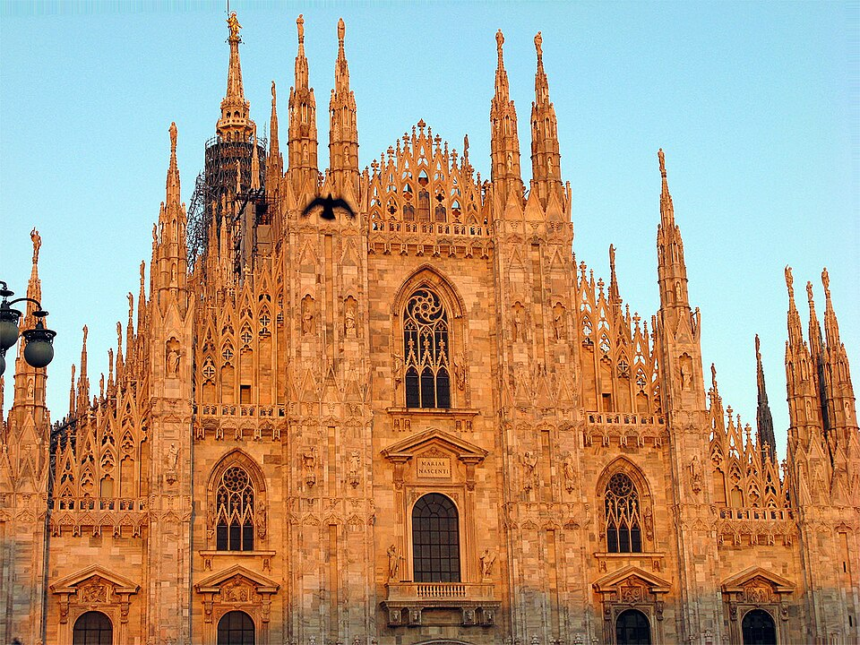
Миланский собор
3400 статуй, 135 шпилей, 579 лет строительства. Единственный крупный готический собор, полностью облицованный мрамором. На шпиле — золотая статуя Мадонны (Madonnina), 1774.
1386 — 1965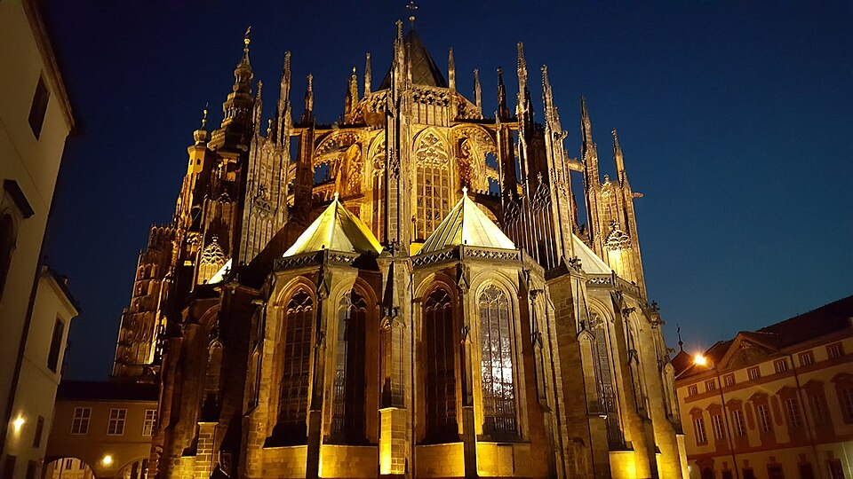
Собор Святого Вита
585 лет строительства. Внутри — витражи Альфонса Мухи (1930-е), гробница Вацлава I и коронационные регалии Чехии, которые открывают лишь раз в несколько десятилетий. Ключи хранят 7 человек одновременно.
1344 — 1929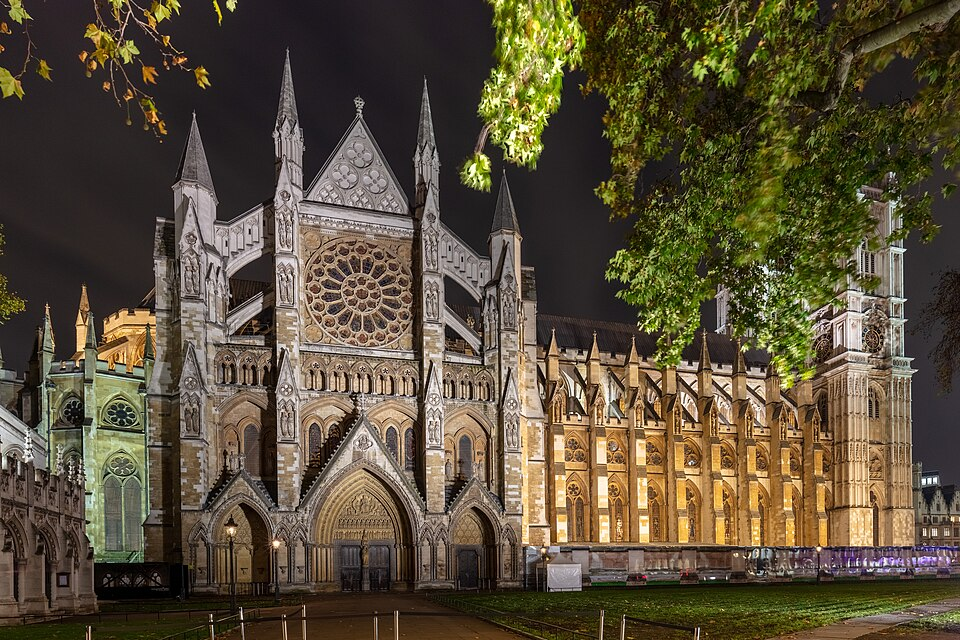
Вестминстерское аббатство
Перестроено в готическом стиле при Генрихе III. Место коронации всех английских монархов с 1066 года. Здесь похоронены Исаак Ньютон, Чарльз Дарвин, Чарльз Диккенс, Стивен Хокинг.
1245 — 1517Инженерные чудеса
Тёмные полотна
✦ ✠ ✦Два разных явления: средневековое (XII–XV вв.) — витражи, алтари, иллюминированные рукописи; и современное — романтизм, символизм, contemporary gothic, где тьма становится эстетической категорией. Ключевой философский фундамент — трактат Эдмунда Бёрка «Философское исследование о происхождении наших идей возвышенного и прекрасного» (1757).
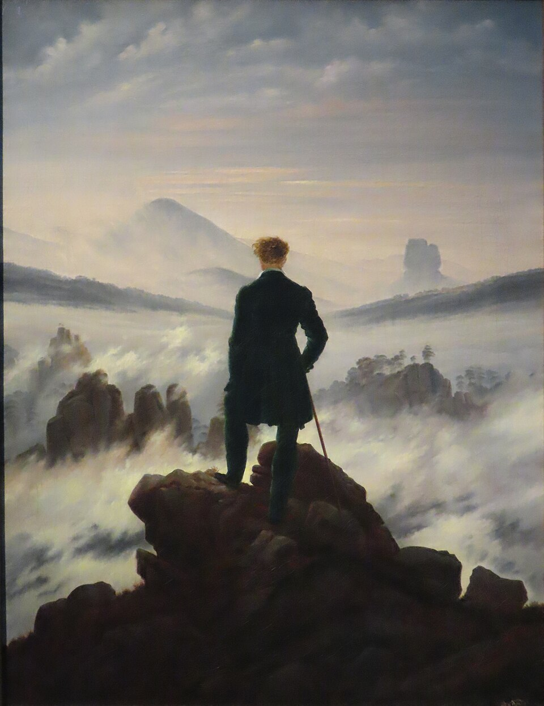
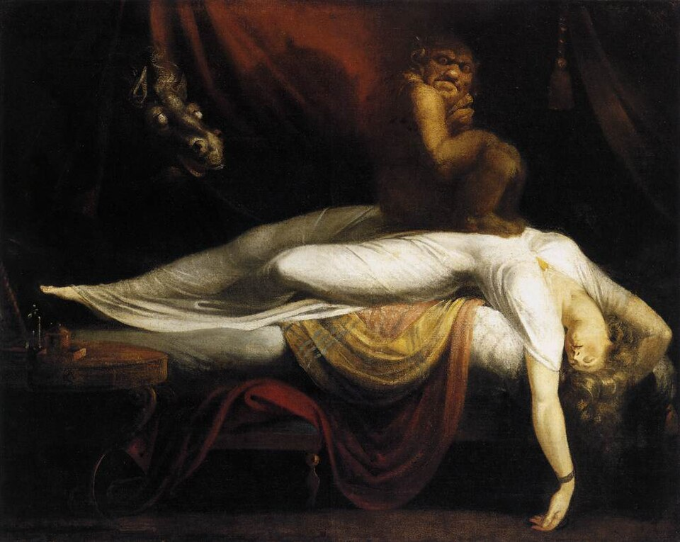
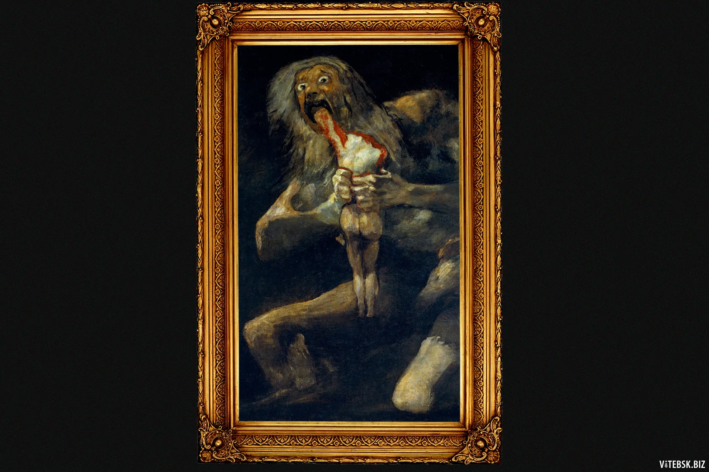
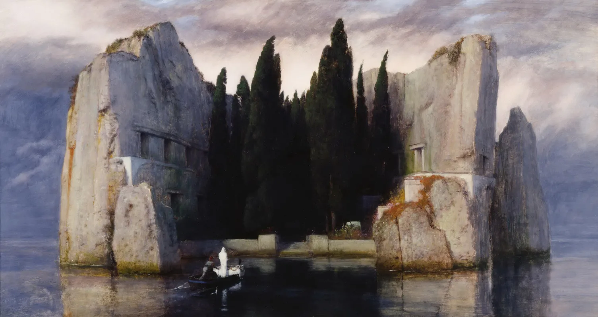
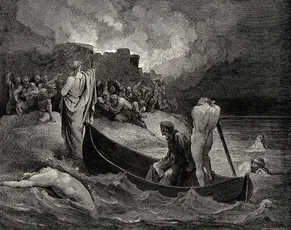
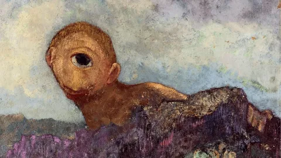
«Искусство должно быть прекрасным и ужасным одновременно — иначе зачем оно?»
— Эдвард ГориПроклятые книги
✦ ✠ ✦Жанр возник в 1764 году, когда Хорас Уолпол издал «Замок Отранто» — мистификацию, выданную за перевод итальянской рукописи XVI века. Обман раскрылся лишь после его смерти. Готический роман соединил средневековый антураж, ужас, тайну и психологизм.
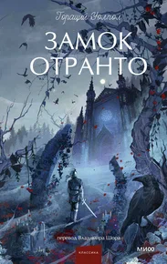
Замок Отранто · 1764
Хорас Уолпол. Мистификация: выдан за перевод итальянской рукописи XVI века. Обман раскрылся лишь после смерти автора. Действие — в Италии XII века.
1764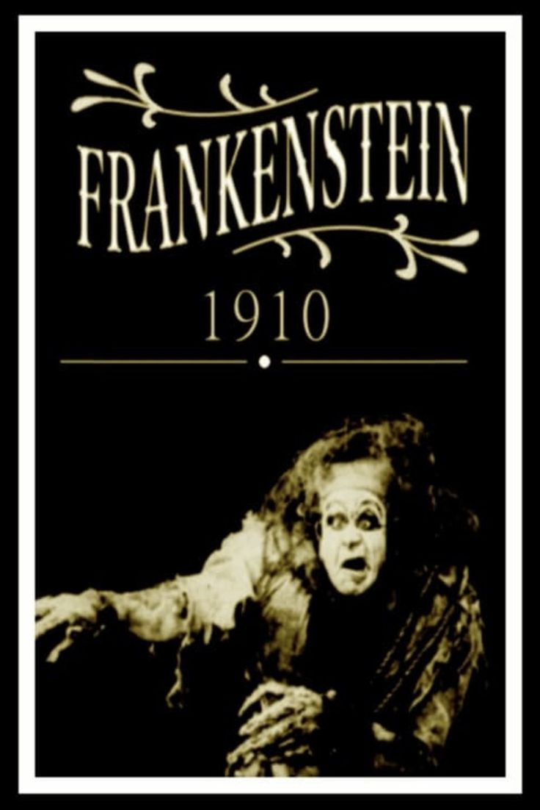
Франкенштейн · 1818
Мэри Шелли, 20 лет. Написан после «года без лета» 1816 на вилле Байрона у Женевского озера. Оригинальное название — «Франкенштейн, или Современный Прометей».
1818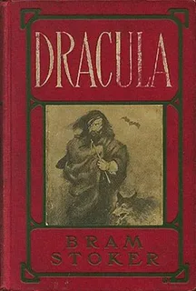
Дракула · 1897
Брэм Стокер. Эпистолярная форма: письма, дневники, газетные вырезки. Прототип — Влад III Цепеш (Дракул), господарь Валахии, XV век. Стокер никогда не был в Трансильвании.
1897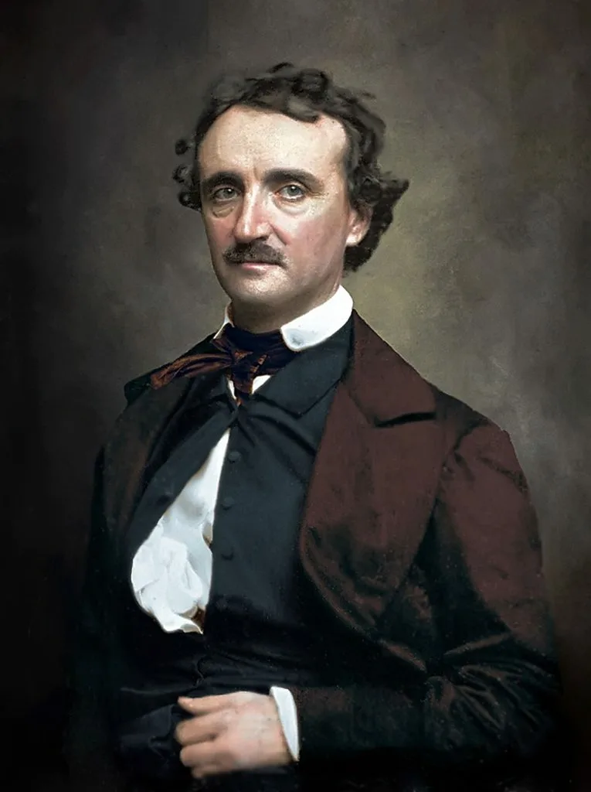
Эдгар Аллан По · 1809–1849
«Ворон» (1845), «Падение дома Ашеров» (1839), «Маска Красной смерти» (1842). Основоположник детектива, психологического ужаса, научной фантастики. Умер при загадочных обстоятельствах.
1809 — 1849Хронология жанра
Американский поджанр, действие которого происходит на Юге США. Вместо замков — плантации и разоряющиеся особняки, вместо призраков — расовая травма, нищета и религиозный фанатизм. Ключевые авторы: Уильям Фолкнер, Фланнери О'Коннор, Теннесси Уильямс, Карсон Маккаллерс, Трумэн Капоте.
«Готика — это не про монстров. Это про то, что мы прячем в подвале собственной души.»
— Джойс Кэрол ОутсСимволизм и оккультизм
✦ ✠ ✦Готическая эстетика тесно связана с оккультной традицией: алхимией, астрологией, таро, гримуарами. Многие символы, которые сегодня воспринимаются как «готические», пришли из реальных эзотерических практик Средневековья и Нового времени.
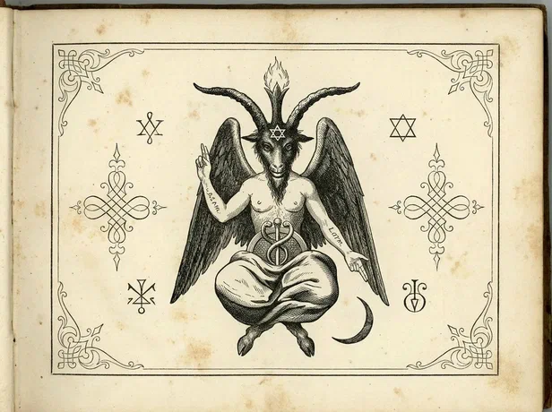
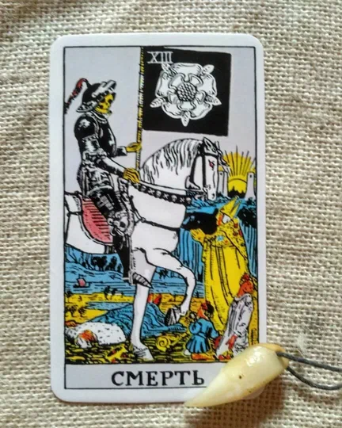
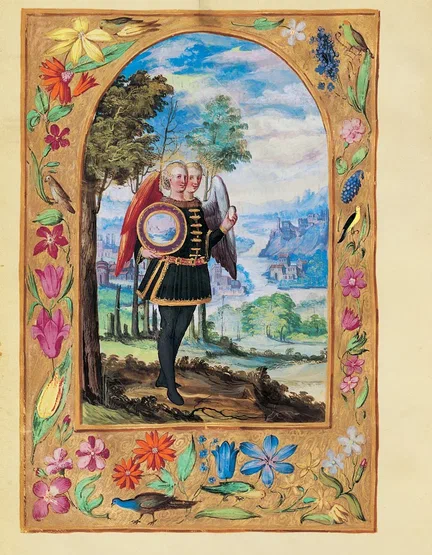
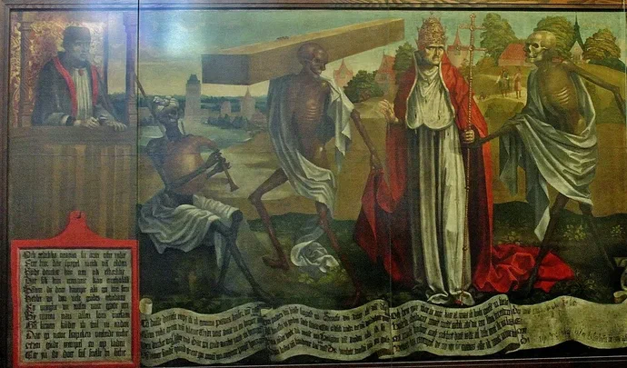
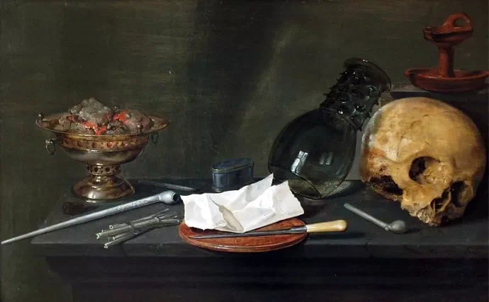
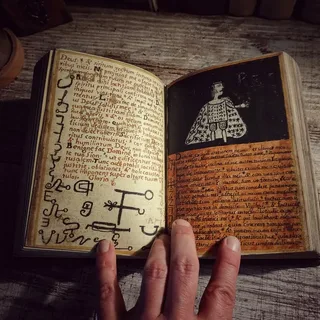
Ключевые символы
Некрополи
✦ ✠ ✦Кладбища — не просто места захоронений, а архитектурные музеи под открытым небом. Готические некрополи XIX века стали туристическими достопримечательностями и местом паломничества для готов, поэтов и фотографов.
Хайгейтское кладбище
Открыто в 1839. Здесь похоронены Карл Маркс, Джордж Элиот, Дуглас Адамс. В 1970-е — место охоты «Хайгейтского вампира» (мистификация, но легенда жива).
1839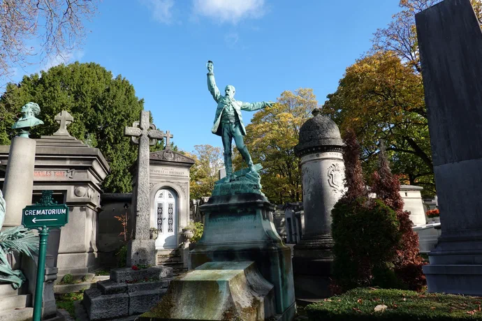
Пер-Лашез
Открыто в 1804. Похоронены Оскар Уайльд, Джим Моррисон, Шопен, Бальзак, Эдит Пиаф, Гертруда Стайн. Могила Уайльда покрыта следами помады — традиция запрещена в 2011.
1804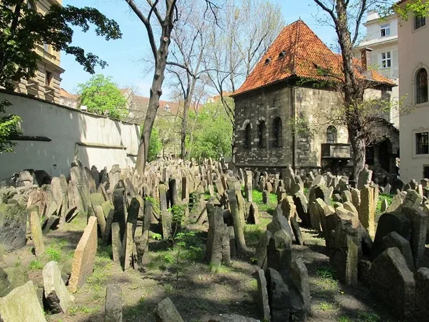
Старое еврейское кладбище
Действовало с 1439 по 1787. Из-за запрета расширять территорию здесь 12 000 надгробий и до 100 000 захоронений в несколько слоёв. Надгробия стоят вплотную.
1439 — 1787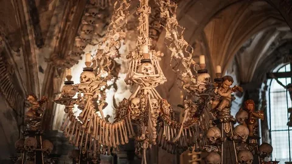
Костница Седлец (Оссуарий)
В 1278 году аббат привёз землю с Голгофы — кладбище стало популярным. В 1870 году Франтишек Ринт украсил часовню костями 40 000–70 000 человек: люстра, герб Шварценбергов, пирамиды.
1278 — 1870На готических кладбищах XIX века каждая деталь имела смысл: перевёрнутый факел — угасшая жизнь; сломанная колонна — жизнь, оборванная в расцвете; урна с драпировкой — тело как сосуд души; плющ — вечная память и верность; кипарис — печаль и бессмертие; якорь — надежда; сова — мудрость, но также ночь и смерть.
Дети полуночи
✦ ✠ ✦Современная готическая субкультура возникла в конце 1970-х — начале 1980-х в Великобритании как ответвление панка. Термин закрепил журналист Стив Китт в 1982 году, описав фанатов Siouxsie and the Banshees как «gothic». Точка отсчёта — лондонский клуб Batcave в Сохо (открыт в июле 1982).
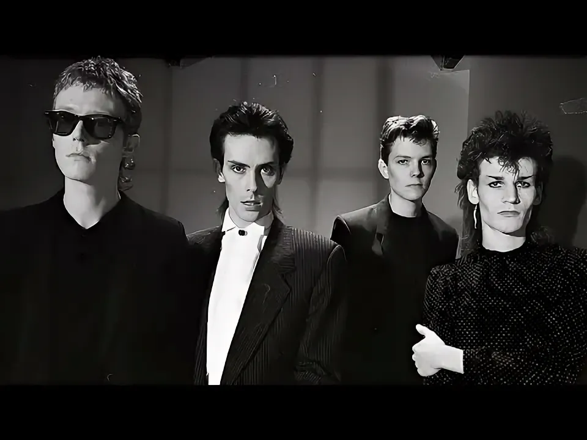
Bauhaus
Основана в Нортгемптоне. Песня «Bela Lugosi's Dead» (1979, 9:36) — неофициальный гимн субкультуры. Названа в честь немецкой архитектурной школы, а не в честь группы. Распалась в 1983, воссоединилась в 1998 и 2019.
1978 — 1983Siouxsie Sioux
Вокалистка Siouxsie and the Banshees (с 1976). «Королева готов». Настоящее имя — Susan Janet Ballion. Альбом «Juju» (1981) — канон готик-рока. Одна из первых женщин, возглавивших пост-панк-группу.
1976 — н.в.
Роберт Смит
Фронтмен The Cure (с 1976). Альбом «Pornography» (1982) — одна из самых мрачных записей десятилетия. Причёска — отдельный культурный феномен. В 2019 введён в Зал славы рок-н-ролла.
1976 — н.в.The Sisters of Mercy
Основана в 1980 Эндрю Элдричем. Альбом «First and Last and Always» (1985) — эталон готик-рока. С 1993 не выпускает новых альбомов, но продолжает гастролировать.
1980 — н.в.Подстили
Ключевые вехи
Хроники тьмы
✦ ✠ ✦Проверяемые исторические события, которые часто используют в готической эстетике. Все факты — из реальных источников: Britannica, UNESCO, официальные архивы.
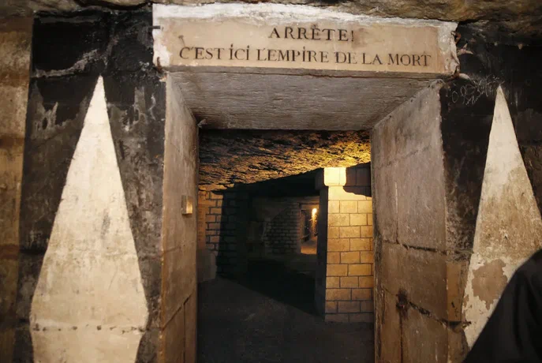
Ещё хроники
Женщина по имени фрау Троффеа начала танцевать без остановки. К ней присоединились десятки, затем сотни людей. Около 400 человек танцевали дни и недели; некоторые умерли от истощения. Причина до сих пор не установлена — версии: эрготизм (отравление спорыньёй), массовая истерия, стресс.
На высоте 5000 м найдено озеро с более 500 скелетами IX века. ДНК показала: это три разные группы — индийцы, жители Средиземноморья и Юго-Восточной Азии. Причина смерти — град размером с крикетный мяч.
С 1100 по 1952 год в Тауэре содержались заключённые. Считается, что вороны живут там по указу Карла II (XVII век): если они улетят, падёт королевство. Сегодня там официально 6 воронов, каждому платят жалование из бюджета.
Malleus Maleficarum — трактат по демонологии, написанный Генрихом Крамером и Якобом Шпренгером. Один из самых влиятельных и человеконенавистнических текстов в истории. Только в Германии между 1560 и 1630 годами по нему казнили около 25 000 человек.
Списки ужаса
- Эпидемия чумы 1347–1351: погибло от 75 до 200 миллионов человек — до 60% населения Европы.
- Извержение Везувия, 79 год: Помпеи и Геркуланум погребены под пеплом. Погибло около 16 000 человек.
- Титаник, 1912: погибло 1517 человек из 2224. Оркестр играл до конца.
- Хиросима, 1945: мгновенно погибло около 70 000 человек; к концу года — до 140 000.
- Испанский грипп, 1918–1920: заразил 500 миллионов (треть населения Земли), убил 50–100 миллионов.
Роза ветров
✦ ✠ ✦Реальные термины из архитектуры, литературы, философии и субкультуры. Наведи на каждый — роза раскроется.